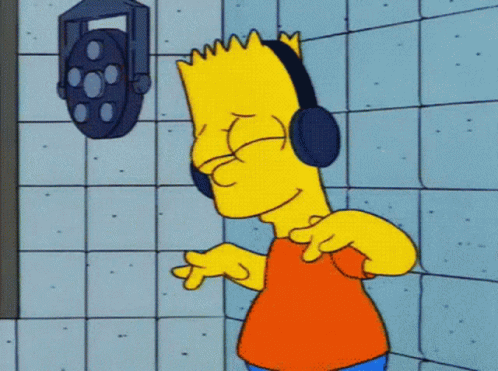
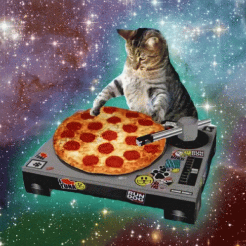

My Favorite Song, On Autoplay- 08/31/2022
Today was full of small happy miracles! To state that one miracle which really made my day, there was this one song by Ellie Goulding that I used to listen to on loop in my high school days. Today, while I was working out, I actually thought about this song randomly. Believe it or not, it has been more than five years since I last listened to this song and yet randomly enough, Spotify played just this number for me on radio. Is this magic, or can AI finally read our minds now? Anyway, it made my day.
The song actually reminded me of this fictional character that I fangirled.
Dancing By Myself- 09/01/2022
There was a city-wide powercut today, and in this excuse, I took some time off from my laptop and smartphone and went to the rooftop for a nice one-hour long walk. The moon was out, and so were the stars. The lack of city lights made it look even more beautiful. It was then that I noticed my shadow, look somewhat eery and large on the wall- I took this time to dance by myself, with my shadow.

This was actually a creepy thing to do, I'll be honest.
Dreaming About Food- 09/02/2022
Today started off kind of weird, when I had a dream very early in the morning that I was eating pizza in my sleep. It was very cheesy and had lots of onions and mushroom for toppings- so yum but then, I woke up right before I could savour it. Pretty much then, I realized that it was actually time for me to go to the gym instead. What a sad reality check. :( Later on, I also ran for five extra minutes on the treadmill.
I honestly don't even like Pizza that much. :/